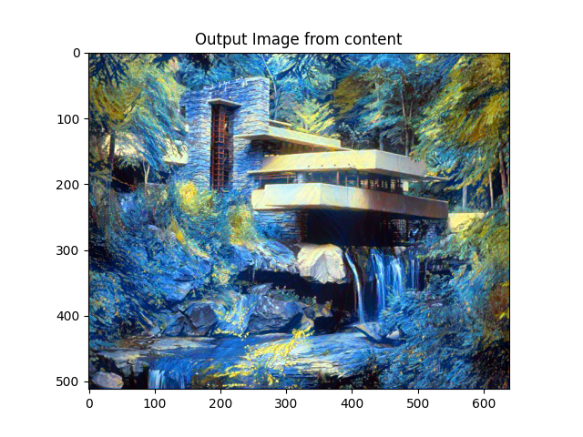
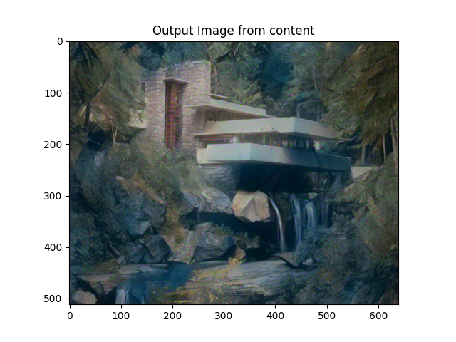
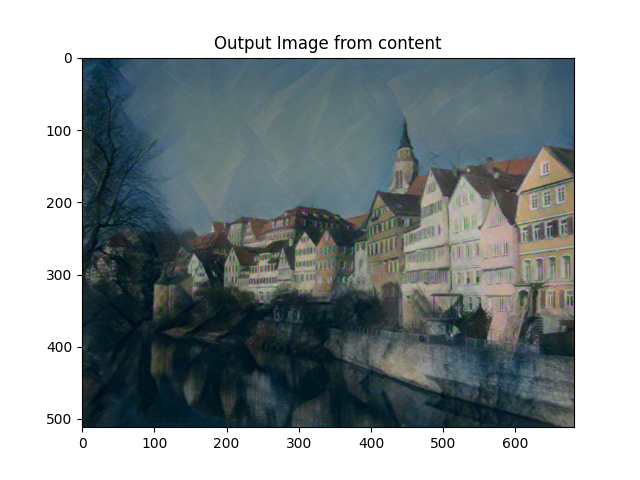

Introduction
In this assignment, I implemented neural style transfer which resembles specific content in a certain artistic style. For example, generating images like Fallingwater in Frida Kahlo's artistic style. The algorithm takes in a content image, a style image, and another input image. The input image is optimized to match the previous two target images in content and style distance space.
The project consists of three parts:
- Content Reconstruction: Optimizing random noise with respect to content loss only
- Texture Synthesis: Generating textures by optimizing style loss only
- Style Transfer: Combining content and style losses to perform neural style transfer
Part 1: Content Reconstruction [30 points]
In this part, I optimized a random noise image with respect to content loss only. Content loss measures the distance between feature representations of the input image and target content image at specific layers of a pre-trained VGG-19 network.
Content Loss at Different Layers
I experimented with applying content loss at different layers of the VGG-19 network to understand how the layer choice affects the reconstruction.
Content Image

Layer 1
Layer 3
Layer 6
Layer 9
Original image and optimizing content loss on the 4 different layers are shown above. My favorite is optimizing on the layer 1 and layer 3 as it provides a good balance between preserving details and color, and capturing the overall structure. Lower layers (layer 1, layer 3) produce reconstructions very close to the original with fine details, while higher layers (layer 9) preserve only structural elements with significant loss of detail.
Results from Different Random Noise Initializations
I took two different random noise images as input and optimized them using content loss at the layer 3.
Content Target
Random Noise 1 (seed 0)
Random Noise 2 (seed 12)
Starting from completely different random noise patterns, both images converge to similar results that capture the content of the target image. This shows content optimization is relatively stable regardless of initial conditions, However, there are some differences in texture, lighting, and color remain between the two results.
Part 2: Texture Synthesis [30 points]
In this part, I optimized images to match only the style of a target image without considering content. Style is represented using Gram matrices, which capture correlations between feature maps at different layers.
Style Loss at Different Layers
I experimented with applying style loss at different layers to understand how it affects texture synthesis.
Style Reference

Layer 1-5
Layer 1-10
Layer 1-15
Layer 6-10
When applying style loss at different layers, I like layer1-10 better. The style and colors are most accurately preserved in this layer. And compute effeciency is lower when comparing to using all layers.
Results from Different Random Noise Initializations
I took two different random noise images as input and optimized them using style loss across multiple layers.
Style Target
Random Noise 1 (seed 0)
Random Noise 2 (seed 12)
Unlike content reconstruction, texture synthesis results show significant variation based on initial conditions. While both results capture the style characteristics (color palette, brush stroke texture) of the target image, they present different compositions.
Part 3: Style Transfer [40 points]
In this final part, I combined content and style losses to perform neural style transfer, generating images that preserve the content of one image while adopting the style of another.
Implementation Details
For neural style transfer, I combined the content loss and style loss. I found that optimizing content on layer 3 and style on layers 1-10 produced the best results.
Gram matrix implementation normalizes values by dividing by the number of elements in each feature map.
style weight: 10,000
content weight: 1
steps: 1000
Style Transfer Results
Below is a grid showing two content images styled with two different style images:
Content 1: Fallingwater
Content 2: Tubingen

Style 1: Starry Night
Content 1 + Style 1
Content 2 + Style 1
Style 2: Picasso

Content 1 + Style 2

Content 2 + Style 2
Random Noise vs. Content Image as Input
I compared the results of style transfer when starting from random noise versus using the content image as the initial input:
Content 1: Fallingwater
Content 2: Tubingen
Style 1: Starry Night
Content 1 + Style 1
Content 2 + Style 1
Style 2: Picasso
Content 1 + Style 2
Content 2 + Style 2
Starting from the content image produces results that better preserve the content structure, with more detail and sharper edges. It also significantly reduces optimization time—approximately 50% faster convergence compared to starting from random noise. For practical applications, I recommend starting from the content image as it provides better content preservation and faster convergence.
Personal Style Transfer Examples
Here are some style transfer results using my favorite images:
Content: Cityscape

Style: Monet

Stylized Result

Content: Pet

Style: Ukiyo-e

Stylized Result

Bells & Whistles (Extra Credit)
Stylized Cats from Previous Homework
I applied style transfer to some of the generated cat images from Project 3 (DCGAN):
Generated Cat

Style: Starry Night

Stylized Result

Video Style Transfer
I implemented frame-by-frame style transfer on a short video clip. To maintain temporal consistency, I used each stylized frame as the starting point for the next frame's optimization.